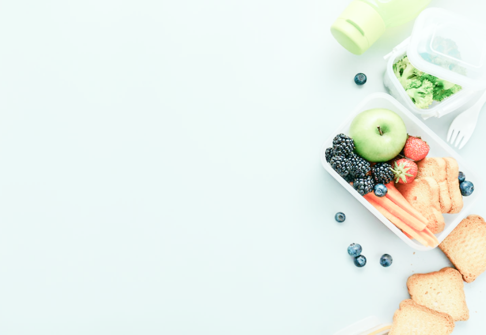

نحن هنا لمساعدتكم
حث الناس على الاكل الطبيعي (الصحي) لتجنب الامراض فيما بعد و تعريفهم بفائدة كل مكون الغذاء النباتي هو الأفضل لصحة الأنسان ويساعدك ب ومن هذه الفوائد نقاء البشرة بشرة النباتيين نقية صافية ولا يظهر عليهم العمر لياقة أعلى قلة الشحوم والدهون الغير صحية في الغذاء النباتي تعطي النباتيين لياقة بدنية عالية العلاج والوقاية من الأمراض المزمنة الوقاية من عدد كبير من الأمراض مثل مرض الزهايمر ، التهاب المفاصل، السرطان، مرض السكري، أمراض الكلى، أمراض القلب والشرايين وغيرها التخلص من الوزن الزائد تقريبا جميع النباتيين عن تحولهم لحمية صحية يخسرون الوزن الزائد ويعود وزنهم الطبيعي
يعتبر نظام فيجن Plant-based Diets من أفضل الأنظمة الغذائية الصحية إذا تم تطبيقها بصورة صحيحة ، فقد أثبتت فعاليتها في المساعدة على الشفاء / والوقاية من عدد كبير من الأمراض مثل مرض الزهايمر ، التهاب المفاصل ، الربو ، السرطان ، مرض السكري ، أمراض الكلى ، أمراض القلب والشرايين ، البدانة ، أمراض اللثة والأسنان، ترقق العظام ، أمراض ضغط الدم ، أمراض الكبد ، مرض التصلب المتعدد ، الصداع النصفي ، التليف الكيسي ، ومرض الانسداد الرئوي المزمن والكثير من الأمراض المزمنة الأخرى ، وهي طريقة مثالية للحفاظ على قوام رشيق والتمتع بصحة جيدة وعمر طويل